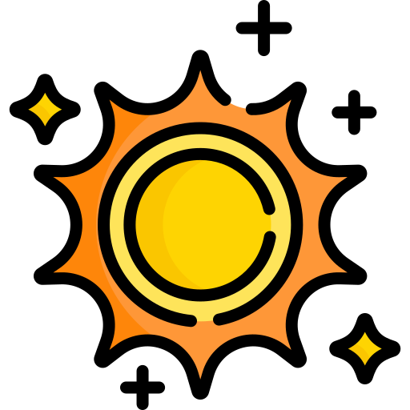
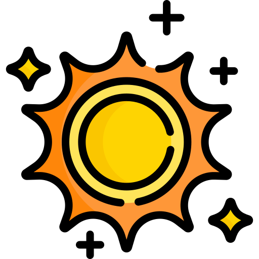
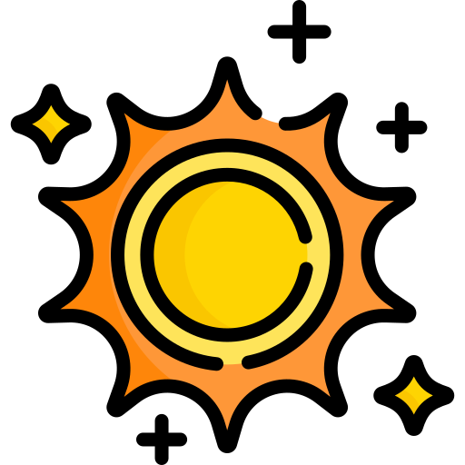

Alumno, curso: Raúl Montoya Ramos, 1DAM
Elementos no obvios de la rúbrica: He utilizado JavaScript para que al entrar al juego se muestre por consola el mensaje "Bienvenido al juego" y al clicar un div aparezca el mensaje "Div clicado". Considero que el resto de elementos requeridos por la rúbrica se pueden observar fácilmente, aunque si no es así le agradecería que me lo consultara por moodle o presencialmente en Cenec y estaré encantado de responder cualquier duda sobre mi trabajo
